Play Genetic with Alice
| Class branch tree | |||||
|---|---|---|---|---|---|
  | |||||
| Job Bonus of Geneticist | |||||
| Str | Agi | Vit | Int | Dex | Luk |
| +3 | +6 | +6 | +12 | +8 | +2 |
Introduction
Hello fellow players , first of all, thank you for coming here reading my guide.
To be honest it is not really a guide, but more like a diary of my journey on Genetic that I want to share for you.
While playing Ragnarok I met a lot of genetics that playing solo but got lost in their adventure. So I decided to make this guide hoping it can help them find their own way to enjoy the game as a Genetic. Thus, my guide will focus mainly on soloing.
Even though my wiki name is Alice but my ingame name Is ”Otowa Yonko”, feel free to ask any questions if you want a help by private message me ingame. If I’m not online you can try direct message on Discord instead “Ceniabestgurl#5044”
This guide is based on server I’m playing – NovaRO.
- Important : !This guide is currently in progress!
Why do you want to read this guide ?
- As i mentioned above, my guide will mostly focus in solo geneticist players. In this guide , i will try to share my experience in Farming , Leveling and Equipments obtaining progress.
- Additionally, I will also guide to complete many specific instances without parties.
- You want to know ways to use Homunculus's skills effectively.
- You seeking for ideas building your own Genetic.
Class Overview
- Geneticist is the highest upgrade in Merchant class Alchemist branch.
 Merchant ->
Merchant ->  Alchemist ->
Alchemist ->  Biochemist ->
Biochemist ->  Geneticist
Geneticist- Reminder : It is highly recommend to change to Trans class and maximum its job level before changing to 3rd class.
- Most of Genetics skills require ingredients/items to be able to use them.
- Thus farming for ingredients/items is necessary.
- Geneticist is the only class can play solo but not alone.
- You are able to access to many popular element ( Neutral, Holy, Shadow ) and even rare element ( Ghost ).
- Nightmare of non-ghost high vit bosses.
Skill Description
- Click Expand button to show the contents.
Merchant Skills
| Skill | Max level | Skill description, note and tips |
|---|---|---|
 Enlarge Weight Limit Enlarge Weight Limit
|
10 | Increase your Weight limit by 2000 at max level.
|
 Discount Discount
|
10 | Decrease amount of Zeny needed to buy NPC's shop items.
|
 Overcharge Overcharge
|
10 | Increase amount of Zeny when selling your items to NPC.
|
 Push Cart Push Cart
|
10 | Allow you to rent a Cart which works like an extra inventory with 8000 Weight Limit
|
 Mammonite Mammonite
|
10 | Spend an amount of Zeny depends on skill level to inflict Physical Damage to an enemy
|
 Vending Vending
|
10 | Open a shop at Vending-allowed area ( mostly at @go 37 ). You need equip a Cart to use this skill.
|
 Item Appraisal Item Appraisal
|
1 | Allow you to identify an unidentified item. |
 Crazy Uproar Crazy Uproar
|
1 | Add +4 STR and +30 ATK for 5 minutes.
30 Seconds Cooldown |
 Change Cart Change Cart
|
1 | Change the appearance of your Cart. |
 Change Cart 2 Change Cart 2
|
1 | Change the appearance of your Cart ( different list with Change Cart ).
|
 Cart Revolution Cart Revolution
|
1 | Inflict AoE Physical Attack Damage to enemies.
|
Alchemist Skill
| Skill | Max Level | Skill description, notes and tips |
|---|---|---|
 Axe Mastery Axe Mastery
|
10 | Increase your ATK by +3*Skill Level when using One-handed Sword or Axe type weapons
|
 Learning Potion (Potion Research) Learning Potion (Potion Research)
|
10 | Increase Healing items effect by 5*Skill levels% and Success chance when brewing potions by 1*Skill level%. |
| Pharmacy (Prepare Potion) | 10 | Allow you brew a Potion requires Medicine Bowl and Manual along with Ingredients
|
 Demonstration Demonstration
|
5 | Throw a  Bottle Grenade into ground and create a small flame that continuous dealing Fire Property Damage on enemies. 3*Skill Level% chance to Break enemies weapon. Bottle Grenade into ground and create a small flame that continuous dealing Fire Property Damage on enemies. 3*Skill Level% chance to Break enemies weapon.
|
 Acid Terror Acid Terror
|
5 | Throw a  Acid Bottle at an enemy and inflict 200*Skill Level% ATK and has 5+10*(Skill Level - 1)% chance to break target's armor, 3*Skill Level% chance to inflict Bleeding status. Acid Bottle at an enemy and inflict 200*Skill Level% ATK and has 5+10*(Skill Level - 1)% chance to break target's armor, 3*Skill Level% chance to inflict Bleeding status.
|
 Potion Pitcher Potion Pitcher
|
5 | Throw a Potion on you or your allies to recover HP or SP depend on Skill Level.
[Lv 1]: 1 By using this skill, the effective of above Healing items is also boosting by Skill Level and target's Vit ( For [Lv 1] -> [Lv 4]) , Int ( For [Lv 5] )
|
 Bio Cannibalize (Summon Flora) Bio Cannibalize (Summon Flora)
|
5 | Using 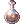 Plant Bottle to summon :
[Lv 1]: Summon a
|
| Summon Marine Sphere | 5 | Consume a
|
|
5 | Consume 1 Weapon against Strip Weapon and Respectively. |
 Biothetic Biothetic
|
1 | Allow you to learn Homunculus related skills. |
 Call Homunculus Call Homunculus
|
1 | Consume 1 Embryo to summon 1 of the 4 Basic Homunculus if no Homunculus has been created before.
If a Homunculus has already existed, this skill will call that Homunculus out instead You can access to Homunculus status table by Alt+R If you created a non-expected Homunculus, you can delete him in Alt+R |
 Rest Rest
|
1 | Take your Homunculus back into Rest mode.
You are able to call back just by using |
| Resurrect Homunculus | 1 | Once your Homunculus is defeated in battle and its HP turn to 0, you can re-summon it by this skill. |
 Berserk Pitcher Berserk Pitcher
|
1 | Throw 2  Berserk Potion at an allied target to increase target's ASPD regardedless Class but still require target's Base Leve >=85. Berserk Potion at an allied target to increase target's ASPD regardedless Class but still require target's Base Leve >=85.
|
 Twilight Alchemy I Twilight Alchemy I
|
1 | Allow you to brew 200  White Potion at once. White Potion at once.
|
| Twilight Alchemy II
|
1 | Allow you to brew 200  Condensed White Potion at once. You can earn Alchemist Ranking Point by using this skill. Condensed White Potion at once. You can earn Alchemist Ranking Point by using this skill.
|
| Twilight Alchemy III
|
1 | Allow you to brew 100 Alcohol , 50 Bottle Grenade and Acid Bottle at once.
|


Biochemist Skills
| Skill | Max Level | Skill description, notes and tips |
|---|---|---|
 Heal Heal
|
10 | Throw Condensed Potions depends on skill levels , heal all allies targets in 7x7 cells.
[Lv 1 -> 5] : Consume Increase Healing effectiveness of used Condensed Potions by 100+10*Skill Levels%.
Since you can just quickly change a garment with |
 Full Chemical Protection Full Chemical Protection
|
5 | Consume 1
|
 Acid Demonstration (Acid Bomb) Acid Demonstration (Acid Bomb)
|
10 | Inflict 1*Skill Levels hits on a target.
Consume 1 |


Geneticist Skills
| Skill | Max level | Skill description, note and tips |
|---|---|---|
 Sword Training Sword Training
|
5 | Increase ATK by 10*Skill Level and Accuracy by 3*Skill Levels when equips with One-handed Sword or Dagger type weapons.
Note: Even though it isn't affected by size, race and class bonuses, but it does with long ranged bonus. So you may consider putting points in this skill to maximize your damage output. You will have enough skill points for other needed skills anyway. |
| Cart Remodeling | 5 | Increase your Cart Weight Limit by 500*Skill Level and Accuracy when using Cart Offensive Skills by 4*Skill Level.
This skill is a must have because it affects |
 Cart Tornado Cart Tornado
|
5 | Inflict Physical Damage 5x5 cells around you. The higher your current Cart weight, the higher damage.
I don't recommend to have this skill because it make your Cart always full to increase its damage. Its cooldown is also very high so in general the DPS is very low. |
 Cart Cannon Cart Cannon
|
5 | Inflict Ranged Physical Damage to a target and 3x3/5x5/7x7 cells around the target depends on skill levels.
The skill has 0.5s After Cast Delay and 0.6s Hard Animation. After testing on my own and collected information, by doing hit and move ( a.k.a dance ), the amount of hit can be produced per second seems to be about 2.3~2.4 hit/second. Thus, if you want to use dancing technique for this skill, 20% After Cast Delay is enough to fulfill the duty. Consume 1 Cannon Ball to use. List of available Cannon Balls : Cannon Ball ( Neutral property ) It's your main source of damage, so I recommend to get it as soon as possible.
|
 Cart Boost Cart Boost
|
5 | Massively increase your movement speed and increase ATK.
This skill boosts your mobility a huge, I recommend always have it enable.
|
 Thorn Trap Thorn Trap
|
5 | Consume 1  Thorny Plant Seed to create a trap that make an enemy step on immobilized and receive damage continuously. Thorny Plant Seed to create a trap that make an enemy step on immobilized and receive damage continuously.
A very good skill for Instance Bosses as it works on Bosses monster fully duration.
|
 Blood Sucker Blood Sucker
|
5 | Consume 5 Bloodsuck Plant Seed and place it in yourself or party members to give target ((-1) + (2 x skill level))% chance to restore (skill level)% of damage as HP when dealing physical damage. Skill duration : ((-20) + (60 x skill level)) seconds. Too convenient to ignore, but don't need to max it out, personal experience level 3 is already good enough to use, but if you have skill points that no where to put, then feel free to put more in this skill. |
 Spore Explosion Spore Explosion
|
5 | Consume 1  Bomb Mushroom Spore and place it in an enemy target deals (400 + (200 x skill level))%Atk Bomb Mushroom Spore and place it in an enemy target deals (400 + (200 x skill level))%Atk
|
 Wall of Thorn Wall of Thorn
|
5 | Consume 1 Thorny Plant Seed to create a thorny wall that deal damage and knock back enemies.
This skill is good to protect yourself when being surrounded by a large amount of non-boss monsters but not worth maxing out.
|
 Crazy Weed Crazy Weed
|
10 | Consume 1 Thorny Plant Seed to inflict Weapon Property Damage in an area of 9x9 cells.
Also remove Ground Skills ( Example :
|
 Demonic Fire Demonic Fire
|
5 | Consume 1 Bottle Grenade to create a flame area continuous dealing Fire Property Damage and inflict [Burn] effect on enemies.
Recommend to max out in order to increase duration. |
 Fire Expansion Fire Expansion
|
5 | Consume catalysts to inflict different effects on Demonic Fire area depends on skill levels :
[Lv 1] : Consume 1 This skill is suprisingly good for defense thanks to effect of [Lv 3] and [Lv 4], also nice to clear large amount of high VIT monsters group by [Lv 5].
|
 Hell Plant Hell Plant
|
5 | Consume 1 Plant Bottle to plant a Hell Plant on yourself that will deal damage around 5x5 AoE per 0.3 second for 3 minutes at max level. The damage of this skill is increase by about 20% per level of Bio Cannibalize (Summon Flora). This skill is a perfect tool for farming just by walking around.
|
| Howling of Mandragora | 5 | Consume 1 Mandragora Flowerpot to inflict -4*Skill Levels INT and Extense Fixed Casting Time by [0.5*Skill Levels] seconds on enemies around you.
[Lv 1 -> 2] : 11x11 cells AoE. [Lv 3 -> 4] : 13x13 cells AoE. [Lv 5 ] : 15x15 cells AoE. Base chace of effect = [25+10*(Skill Level - 1)]%. Drain affected enemies SP by [25+(5*Skill Level - 1]%. Generally no use in PvM contents but works perfectly in PvP.
|
 Change Material Change Material
|
1 | Change materials into products by combining right recipes.
See Here for more information. |
 Mixed Cooking Mixed Cooking
|
2 | Cook +20 Stats by combining right recipes.
See Here for more information. |
 Special Pharmacy Special Pharmacy
|
10 | Create high quality potions by using right recipe.
See Here for more information about recipes. This skill is always success, but the amount of products is affected by following factors ( the higher, the better ) : INT , DEX , LUK status. Base Levels. Depends on
|
 Illusion Doping Illusion Doping
|
5 | Inflict small damage around you and inflict Hallucination status on hit enemies.
Consume 1 Alcohol Useless in PvM contents, mostly used in PvP. |
 Full Throttle Full Throttle
|
5 | Fully restore HP, increase Base stats by 20%, movement speed by double for 5+5*Skill levels seconds.
After the effect expires, inflict Rebound which decrease 25% movement speed, prevents natural HP & SP Recovery, forced to use /swt emote every 2 seconds. This skill is okay to have, but should be used only in emergency/decisive situations. However, its downside is its cooldown too long ( 50 Minutes ). |


Biolo Skills
| Skill | Max level | Skill description, note and tips |
|---|---|---|
| Bionic Pharmacy | 5 | Brew consumables and ammunitions for Biolo's skills. Brewing detail will be available in Here
The maximum amount of creation is 15 at Level 5 and affected by stats (INT, DEX, LUK) (confirm?) |
| The Whole Protection | 5 | Consume 3 Advanced Coating Potion to cast Full Chemical Protection for the whole party in AoE.
|
| Full Shadow Protection | 4 | Consume 1 Advanced Coating Potion to protect target's shadow equipments from stripped or damaged |
| Bionic Mastery | 10 | Increase stats of summoned plants from Biolo's skills. |
| Acidified Zone (Water) | 5 | Consume 2 Icicle Acid Bottle to deals Water property long ranged physical damage to to the target and surrounding enemies around the target for 7 hits. Deals additional damage depends on user's base level and POW. |
| Acidified Zone (Ground) | 5 | Consume 2 Earth Acid Bottle to deals Earth property long ranged physical damage to to the target and surrounding enemies around the target for 7 hits. Deals additional damage depends on user's base level and POW. |
| Acidified Zone (Wind) | 5 | Consume 2 Gale Acid Bottle to deals Wind property long ranged physical damage to to the target and surrounding enemies around the target for 7 hits. Deals additional damage depends on user's base level and POW. |
| Acidified Zone (Fire) | 5 | Consume 2 Flame Acid Bottle to deals Fire property long ranged physical damage to to the target and surrounding enemies around the target for 7 hits. Deals additional damage depends on user's base level and POW. |
| Research Report | 1 | Consume 100 AP. Increases Acidified Zone skills damage and reduces material consumption of Acidified Zone skills form 2 to 1. Additionally, increases damage of Acidified Zone skills against Formless and Plant race monsters. |
| Creeper | 5 | Consume 1 Great Plant Bottle. Summon a Creeper, it does nothing, just divides Earthquake damage in boss fight. |
| Wooden Warrior | 5 | Consume 2 Great Plant Bottle. Summon a Wooden Warrior. Increase Cart Cannon and Cart Tornado damage.Remove Cart Cannon hard animation, allow you to spam it as long as you have enough After cast delay reduction and ASPD.
|
| Wooden Fairy | 5 | Consume 2 Great Plant Bottle. Summon a Wooden Fairy. Increase Spore Explosion damage.
|
| Hell Tree | 5 |
Consume 60 AP. Consume 3 Great Plant Bottle. Summon a Hell Tree, wwhich wwill cast a buff that provide 20% ranged physical attack bonus. |
Additional skills info
- The list of recipes below is a summary of Items that i think worth creating, you can access full list by clicking in Skill name
- Pharmacy ( Prepare Potion ) requires 1 Medicine Bowl for each product.
- Mixed Cooking requires 1
 Melange Pot for each product.
Melange Pot for each product.


Skill success chance formulas
- Pharmacy ( Prepare Potion ) according to iroWiki
Brewing Rate = [(PreparePotion_Lv × 3) + (PotionResearch_Lv) + (InstructionChange_Lv) + (JobLv × 0.2) + (DEX × 0.1) + (LUK × 0.1) + (INT × 0.05) + Potion_Rate]%
| Potion Rate | Potions | Value of [DEX + LUK + INT/2] needed to achieve 100% rate |
|---|---|---|
| +15% ~ +25% | Red Potion, Yellow Potion, White Potion | 280 |
| +5% ~ +15% | Alcohol | 380 |
| -5% ~ +5% | Acid Bottle, Marine Sphere Bottle, Bottle Grenade, Plant Bottle, Homunculus Supplement | 480 |
| -5% | Blue Potion, Anodyne, Aloevera, Embryo, Elemental Potions, Condensed Red Potion | 480 |
| -10% ~ -5% | Condensed Yellow Potion | 530 |
| -15% ~ -5% | Condensed White Potion, Glistening Coat | 580 |
- How to achieve [DEX + LUK + INT/2 = 580] :
- Step 1 : Prepare Minstrel and Priest (and Soul linker if you brew by Soul-needed skill). That's why I mentioned to make them during the feeding Homun time.
- Step 2 : Reset and Unequip your brewer. Make a party and invite Minstrel and Priest, Soul linker is not needed to invite in party.
- Step 3 : Let your Minstrel use
 Marionette Control which share 50% of Minstrel's base stats to his target (which is you). You'll need to hold Shift button or turn on
Marionette Control which share 50% of Minstrel's base stats to his target (which is you). You'll need to hold Shift button or turn on /nsto be able to use this skill on party member. - Step 4 : Put stat points and equipments for your brewer now.
- Step 5 : Let your Priest boost your stats by his skills.
- Step 6 : Use stats boost items if needed.
- Step 7 : Start brewing, remember to maintain your buffs during brewing progress.
- List of popular stats boost items:
| Item | How to obtain | Notes |
|---|---|---|
 Siroma Iced Tea Siroma Iced Tea
|
Mixed Cooking
|
+20 DEX |
 Petite Tail Noodle Petite Tail Noodle
|
Mixed Cooking
|
+20 LUK |
 Warg Blood Cocktail Warg Blood Cocktail
|
Mixed Cooking
|
+20 INT |
| For +20 stat foods you can also buy in market, spend a little Zeny for a whole progress is worth it. | ||
| Lucky Soup | Sara's Memory | +6 LUK |
 Red Mushroom Wine Red Mushroom Wine
|
Sara's Memory | +6 INT |
 Peach Cake Peach Cake
|
Sara's Memory | +6 DEX |
| 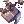 Box of Gloom |  Cloud Hermit Card Cloud Hermit Card
|
+3% DEX |
- Special Pharmacy according to iroWiki
Creation = INT + (DEX ÷ 2) + LUK + Job_Lv + Random[30, 150] + (Base_Lv − 100) + (Potion_Research_Lv × 5) + (Full_Chemical_Protection_Lv × Random[4, 10]) Difficulty = Specific_Value + Item_Rate
Specific Value = [600-20*(Skill_Level - 1)]
For High Level: If Creation > Difficulty by at least 400, creates the maximum number of potions allowed. If Creation > Difficulty by at least 300, creates 3 potions below the maximum allowed. If Creation > Difficulty by at least 100, creates 4 potions below the maximum allowed. If Creation > Difficulty by at least 1, creates 5 potions below the maximum allowed. If Creation < Difficulty, creates 6 potions below the maximum allowed. Item Rates are unknown.
- Mixed Cooking according to iroWiki
Creation = (Job_Lv ÷ 4) + (DEX ÷ 3) + (LUK ÷ 2) Difficulty = Random(30, 150) + Item_Rate
For Level 2: If Creation > Difficulty by at least 30, 10~12 dishes are prepared. If Creation > Difficulty by at least 10, 10 dishes are prepared. If Creation < Difficulty by exactly 10, 8 dishes are prepared. If Creation < Difficulty by at least 30, 5 dishes are prepared. If Creation < Difficulty by at least 50, the cooking fails. Item Rates are unknown.
Homunculus Infomation
Welcome to the most important section of Geneticist class, you may want to ask : "What is Homunculus and why is it so important ?" :
- Homunculus is a special pet that can assist you in many ways : Tanking, Buffing, Dealing damage.
- It will decide your play style depend on chosen Homunculus.
Base Homunculus
| Homunculus | Amistr | Lif | Filir | Vanilmirth | ||||
|---|---|---|---|---|---|---|---|---|
| Base Form | 
|
|||||||
| Evolution Form | 
|

|
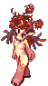 | 
|
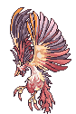 | 
|

| |
| Role | Tank | Support | Physical Damage Dealer | Magical Damage Dealer | ||||
| Food |  Zargon Zargon
|
 Pet Food Pet Food
|
 Garlet Garlet
|
 Scell Scell
| ||||
| Skills | ||||||||


Where (*) is skills obtain-able after evolution
Questions and answers.
- How to create a Homunculus ?
- Step 1 : Get 1 Embryo ( you can either buy or make 1 through Pharmacy ( Prepare Potion ) )
- Step 2 : Use Call Homunculus to create a Homun consuming 1 Embryo.
- Got the Homun you want ? You're done creating Homun.
- Didn't got the Homun you want ? Open Homun status table by Alt+R , click Delete, re-do Step 2.
- How to Evolve my Homun ?
- Step 1 : Make your Homun Intimacy become Loyal.
- Step 2 : Obtain a
 Stone of Sage then use it. Done !
Stone of Sage then use it. Done !
- After Evolution, your Homun will get its power significantly increased.
- How to make my Homun Loyal ?
- You have 2 ways :
- Method 1: Just turn on auto feed and AFK or go farming, Homunculus isn't easy to die as before, so low level area shouldn't be a problem. But the uptime of Homun is only 30 minutes, so make sure to have it called back every 30 minutes.
- Method 2: Using
 Homunculus Supplement to increase Homunculus's intimacy directly by using it. Each pill gives 5 points of intimacy, so 180 pieces is need to make it Loyal instant from the start.
Homunculus Supplement to increase Homunculus's intimacy directly by using it. Each pill gives 5 points of intimacy, so 180 pieces is need to make it Loyal instant from the start.
- Your Homun become Loyal when Intimacy reaches 911 which can be checked by Alt+R and
@hominfo - Note : your Homun Hunger bar won't decrease if it isn't summoned.
- Your Homun become Loyal when Intimacy reaches 911 which can be checked by Alt+R and
Here the table how many Intimacy gained by feeding at specific hunger level :
| Hunger | Intimacy |
|---|---|
| Leave your Homun starving (Hunger bar < 11%) | -1 ( every 200 seconds ) |
| 1% ~ 10% | +5 |
| 11% ~ 25% | +10 |
| 26% ~ 75% | +7.5 |
| 76% ~ 90% | -0.05 |
| 91%~100% | -0.5 |
- Which Homun should I choose to start ?
Here are my thoughts for each Homun, hope they may help you :
- Amistr : A Homun focus on tanking, high HP, all non-evolution skills are used to tank and draw aggro but lack of offensive skills. Thus it won't provide much DPS , however, thanks to high MaxHP and
 Castling, It's perfect to protect you and allow you to deal damage freely.
Castling, It's perfect to protect you and allow you to deal damage freely. - Lif : Lif has nothing other than very high SP Pool, all of her skills are replaced by your skills already.
- Filir : Strong from the start, easy to use but his downside is low VIT. As a result, he can hardly tank anything at Mid Game Period and further.
- Vanilmirth : Stats is evenly, okay DPS , easy to use and it even helps you to increase Brewing success chance by
 Change Instruction.
Change Instruction.
Conclusion : I recommend Vanilmirth > Amistr > Filir > Lif to start your character. Hope it helps.
Homunculus S
| Homun | Eira | Bayeri | Sera | Dieter | Eleanor |
|---|---|---|---|---|---|

|

|

|
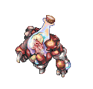 | 
| |
| Role | Support | Tank , Magical AoE Damage Dealer | Support , Summoner | Support , Tank | Single Physical Damage Dealer |
| Food | Small Snow Flower |  Fresh Salad Fresh Salad
|
Apple Pudding |  Big Cell Big Cell
|
 Bun Bun
|
| Skills and unlocked Level |
|
|
|
|
|
| Which Base Homun to choose and why ? |
|
|
|
|
|
| |||||


Questions and Answers :
- How do I mutate my Homun to S type ?
- Take a look at : NovaROwiki or IroWiki.
- Is it necessary to Loyal Homun to obtain Evolution skills?
- Only in NovaRO, you don't need to Loyal your Homun to get Evolution Skills, just Mutate it into S so your Homun will unlock Evolution Skill.
- Does my Homun need to be Loyal to mutate ?
- No, it's unecessary.
- Do i need to make multi Genetics to play other style with different Homun ?
- Fortunately, you don't need to do it, since NovaRO provides Homuncubank which allows you to store your Homun up to 4 in bank and 1 with you ( total 5 Homun in 1 Genetic ).
- What is Homuncubank ?
- Homuncubank is a machine can be seen at the basement of Main Office. It allow you to store and swap Homunculus. 20M Zeny plus 175 Gold Coins is price to open 1 slot of this machine, you may also pay 5000 Nova Point to buy HomuncuBank Ticket instead.

- If considering only for leveling, which homun S should I choose?
- What suitable for you is all depend on you, but here my personal thoughts that may help you decide :
- Eira : Very good for survival, you won't need to bring too much HP potions but kinda SP consuming even if equiped with a lot of SP leech Equipments.
- Sera : Extreme useful for survival thanks to
 Pain Killer. Your ASPD will get slower but it's not a high price. Also thanks to Weekly Quest, you can access to some strong items much sooner, so that you don't need to be too depend on Homunculus damage.
Pain Killer. Your ASPD will get slower but it's not a high price. Also thanks to Weekly Quest, you can access to some strong items much sooner, so that you don't need to be too depend on Homunculus damage. - Eleanor : Good to start, she will do everything for you until 175, all you need to do is chase after and loot the items. But the downside is once you got level 175 and start doing instance, she'll mostly be useless. (But remember to bring blue potions for her)
- Dieter : He's good at drawing aggro by
 Lava Slide and do okay damage by
Lava Slide and do okay damage by  Magma Flow. Also
Magma Flow. Also  Pyroclastic improves your damage output as at low level you won't deal much damage on your own.
Pyroclastic improves your damage output as at low level you won't deal much damage on your own. - Bayeri : Poor performance at the start, but really shine when he reaches 138 to get
 Heilige Stange. Otherwise, his tanking ability is noticeable if you want to level yourself by Bosses hunting.
Heilige Stange. Otherwise, his tanking ability is noticeable if you want to level yourself by Bosses hunting.
- What suitable for you is all depend on you, but here my personal thoughts that may help you decide :
Conclusion :
- Sera > Bayeri = Eira > Eleanor = Dieter for leveling at low level (100 - 169)
- Diêtrr > Bayeri > Eira = Sera > Eleanor for leveling at medium to high level (170 to later)
Remember : They are only suggestions, you should choose what you really want and suit your playstyle !
Leveling progress
Click Expand to view contents.I assumed that you play Geneticist as Start Character for this leveling guide.
- Level 1 -> 55 :
- Complete tutorial allow you to be able to change job to Merchant ( thank Mom ).
- Put you Status Points in DEX until it reaches 40.
- When change job you are rewarded with a 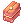 Novice Package. Open it for Blessing Scroll. Head to Payon Dungeon through Warper NPC and kill some Zombies
 until you get Job Level 16, take Push Cart, fill up your Cart by 8000
until you get Job Level 16, take Push Cart, fill up your Cart by 8000  Flower which can be bought at Flower Girl
Flower which can be bought at Flower Girl /navi prontera 113/43. Continue at Payon Dungeon by Cart Revolution until you reach 55 or you can move to moc_fild03for some Wolf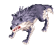.- Tips : If you don’t know how to get to a Map, you may want to open World Map by
Ctrl+~and type Map’s code name (Eg: moc_fild03) in the search bar. It then will appears the destination on the map. And if you don't know the place of a monster, you can try@whereis <monster's name>(Eg: @whereis Poring).
- Tips : If you don’t know how to get to a Map, you may want to open World Map by

- Note : Remember to collect Everything on your leveling way because you need a lot to level this class effectively. Put skill points in Overcharge to get extra Zeny.
- Remember to change job to Alchemist at job 41 ( you don’t need to reach job level 50 because it’s not necessary ).
- Note: Skill recommend to get are Enlarge Weight Limit , Push Cart, Overcharge, Discount. Status recommend after getting 40 DEX are 50 AGI and 40 STR.
- Note: Skill recommend to get are
- Once you changed into an Alchemist, the most priority to do is getting a Homunculus because Alchemist has almost no offensive skills suitable for leveling. So Homunculus will be your main source of power, that why unlock all Homunculus related skills are needed.
- Tips : You may find it getting an Embryo isn’t easy as you started from Zero. But you can obtain enough Zeny by receiving Gold Coin from Dailies Reward. You can know when will you are able to receive by using command
@dailliesin-game. When the countdown is over, go to Main Office and talk to Dailies Reward NPC . Once you got Gold Coin, sell it to other player ( remember to check price before selling ). After that, buy Embryo ( searching place and price by@ws Embryo) which is around 89.000 zeny.
- Tips : You may find it getting an Embryo isn’t easy as you started from Zero. But you can obtain enough Zeny by receiving Gold Coin from Dailies Reward. You can know when will you are able to receive by using command
- Remember to change job to Alchemist at job 41 ( you don’t need to reach job level 50 because it’s not necessary ).
- Level 55 -> 71 :
- You should have obtained more than 35.000 Zeny during Level 1 -> 55, now get yourself a Mercenary ( What is Mercenary – Click Here ). I suggest to get Clara – 5th Grade Bowman Mercenary. So you have total of 2 “teammates” help you on your way leveling.
- Now you can try go to Orc Dungeon , your targets are : Orc Skeleton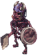 and Orc Zombie
 , you can easily reach 60 at 1st Floor. You may either continue until 70 or change position to Louyang (by
, you can easily reach 60 at 1st Floor. You may either continue until 70 or change position to Louyang (by @go 14, then go to the warp at 6 o’clock) to hunt some Mi Gao 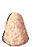 (Warning : don’t let them approach you or your mercenary as they hit pretty hard).- Once reaching base level 65, you may want to change your mercenary into Dali - 6th Grade Bowman Mercenary.
- Status :
| Str | Agi | Vit | Int | Dex | Luk |
| 40 | 65 | 1 | 1 | 60 | 1 |
- Level 71 -> 86 :
- Now it’s time to join the Eden Group
@go 36, and register to be a member by talking to Secretary Lime Evenor , choose Join the Eden Group. - Upon joining Eden Group, you are now able to receive Eden Equipments quests given by Instructor Ur
 . At level 71 it must be This quest. After turning in the quest to Instructor Ur, you can meet Toren to claim your rewards.
. At level 71 it must be This quest. After turning in the quest to Instructor Ur, you can meet Toren to claim your rewards.
- Equipments obtained :
- Now it’s time to join the Eden Group
Eden Group Saber III [0] or
Eden Group Mace III [0] or Eden Group Two-handed Axe I [0]. ( I recommend to take Mace for friendly Size Penalty ).
Eden Group Armor [0]
Eden Group Manteau II [0] 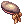 Eden Group Hat II [1] 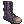 Eden Group Boots IV [0]
- Beside Eden Equipments quests, at Level 71 you are able to receive Level 71 -> 85 Board Quest . I recommend receiving Hunt 10 Evil Druid
 , Hunt 10 Wraith
, Hunt 10 Wraith  and Hunt 15 Mi Gao .
and Hunt 15 Mi Gao .
- Note : Eden board quests are affected by Increase Base/Job EXP items.
- Status :
| Str | Agi | Vit | Int | Dex | Luk |
| 59 | 80 | 20 | 1 | 60 | 1 |
- Level 86 -> 91 :
- Level 86 -> 90 Board Quest is now unlocked for you, I recommend to accept Hunt 30 Ground Petite
 and Hunt 30 Pitman
and Hunt 30 Pitman  . If it’s not enough for you to up to 91, continue raw leveling at Ground Petite . Remember to keep
. If it’s not enough for you to up to 91, continue raw leveling at Ground Petite . Remember to keep  Crimson Mace [2] and
Crimson Mace [2] and  Petite's Tail.
Petite's Tail.
- Level 86 -> 90 Board Quest is now unlocked for you, I recommend to accept Hunt 30 Ground Petite
- Status :
| Str | Agi | Vit | Int | Dex | Luk |
| 72 | 80 | 20 | 1 | 60 | 1 |
- Level 91 -> 99 :
- Now continue Eden Equipments quests at Instructor Ur, take a look at This walkthrough.
- The reward of completing Level 90-99 Eden Equipments quests is able to enchant your weapons. Recommendations : take 2
 Goblin card and ATK+3%.
Goblin card and ATK+3%.
- The reward of completing Level 90-99 Eden Equipments quests is able to enchant your weapons. Recommendations : take 2
- Along with Eden Equipments quests , receive Level 91 -> 99 Board Quest also.
- Recommend quests :
- Now continue Eden Equipments quests at Instructor Ur, take a look at This walkthrough.
Hunt 30 Solider 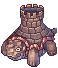 Hunt 30 Freezer 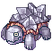 Hunt 30 HeaterHunt 30 Siroma Hunt 30 Roween 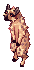 Hunt 30 Stapo 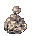 Hunt 30 Dark Priest

- Tips : Don't turn in any Level 91 -> 99 Board Quest upon completing them, save them after change to Trans class.
- After Transcending :
- Now you are a High Novice Level 1, just go down South Field of Prontera and punch some porings to change into High Merchant.
- High Merchant :
- Turn in 1 Level 91 -> 99 Board Quest, just 1 is enough for you to change into Biochemist.
- Biochemist :
- Now you're already a Biochemist, turning all completed Level 91 -> 99 Board Quest and it should be level 87 or higher for you. It is not neccessary to rush at this phase because you want a Homunculus S when change to Geneticist.
- While waiting for your Homunculus becomes Loyal, you should prepare for your next phase : Geneticist. You might want to ask : "So what should i do ?"
- Here the suggestion To-do list :
Make a Job Level 70 Whitesmith in an alt-account for future refining , a Priest with Gloria and a Soul Linker for future crafting ( because your account is feeding Homun ). Additional 1 more alt-account for Minstrel for easy crafting, it's a must if you want brewing. Save up as much as EXP Quests as possible : Eden Board Quests, Gramps. And if your Homun isn't Loyal after you're done all above, you may try to Hunt Ground Petite
- Level 100 -> 111 : At this point i'll assume that you have at least 1 Homunculus S.
- You can now access to Sarah's Memory (+6 stats Food provider) and Bangungot Hospital, also Hazy Forest.
- Accept the following Level 100~110 Board Quest :
Hunt 30 Kobold ( 3 kinds )Hunt 30 Desert Wolf
Hunt 30 Blazer
Hunt 30 Nightmare Terror
Hunt 30 Deleter Hunt 30 Loli Ruri
Hunt 30 Gibbet 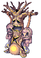 Collect 20
Blue Hair Collect 20
Ectoplasm

- After accepting all the above quest, turn in all quest you completed before while waiting for your Homunculus being Loyal.
- At level 100 you are able to do Banquet for Heroes questline. See. This questline is also a very high source of experience.
- Status :
| Str | Agi | Vit | Int | Dex | Luk |
| 50 | 1 | 50 | 94 | 100 | 1 |
- Level 111 -> 121 :
- Accept the following Level 111~120 Board Quest :
Hunt 30 Venatu ( 3 kinds ) : Hunt 10 Incubus :Hunt 10 Succubus :
Hunt 10 Violy :
Collect 30 Fragment : Fragment Collect 30 Rusty Screw :
Rusty Screw
- Level 115~144 Gramp Quests is opened for you now.
- At level 120, You are now able to access Nightmarish Jitterbug, Ghost Palace.
- Ghost Palace is easy to do at your current level. It provides a very good weapon and okay-ish armor set for you.
- Noticeable Equipments :
Pendant of Chaos [0]
Pendant of Harmony [0]
Pendant of Maelstrom [1]
Thanatos Hammer [1]
- An interesting point about Thanatos Weapons is they can be enchanted. I highly recommend to get the Thanatos Hammer [1] as soon as possible when you got to the required level.
- Status :
| Str | Agi | Vit | Int | Dex | Luk |
| 52 | 1 | 50 | 109 | 100 | 1 |
- Level 121 -> 131 :
- Accept the following Level 121~130 Board Quest :
Hunt 30 Vanberk : 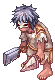 Hunt 30 Isilla :Hunt 30 Ragged Zombie :
Hunt 30 Zombie Slaughter :
Hunt 30 Ferus ( 2 kinds ) :
Hunt 30 Acidus ( 2 kinds ) :
Hunt 30 Hillslion :
Hunt 30 Tatacho : 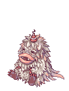 Hunt 30 Centipede :
Collect 30 Fur :
Fur Collect 30 Clattering Skull : Clattering Skull


- Accessible instances :
- Level 125 : Airship Assault provides very useful Starter set, you don't need to complete the instance to get the set :
Manteau of Airship [1]
Armor of Airship [0] Boots of Airship [0]
- Level 130 : Old Glast Heim Normal Mode, Charleston Crisis, Buwaya Cave, Devil's Tower.
- For Charleston Crisis you don't need to clear the instance to get the ingredient for trading gears. Normal monsters drop material :
 Huge Metal Scrap and
Huge Metal Scrap and  Old Fuel Tank.
Old Fuel Tank.
- For Charleston Crisis you don't need to clear the instance to get the ingredient for trading gears. Normal monsters drop material :
- Status :
| Str | Agi | Vit | Int | Dex | Luk |
| 52 | 1 | 50 | 119 | 100 | 1 |
- Level 131 -> 141
- Accept the following Level 131~140 Board Quest :
Hunt 30 One-Horned Scaraba :Hunt 30 Two-Horned Scaraba
Hunt 30 Antler Scaraba :
Hunt 30 Rake Scaraba :
Hunt 30 Bradium Golem :
Hunt 30 Dolomedes :

- You may still stuck at this level range after doing all above quests, so here are some recommendations to move forward :
- Doing Banquet for Heroes questline. See and its daily series.
- Doing Phantasmagorica questline and its daily series.
- A run of Level 115~144 Gramp Quests.
- Defeating MVP from simple instances like : Old Glast Heim Normal Mode, Charleston Crisis, Nightmarish Jitterbug. You may either try finding a party on
#lfgchannel in-game or do it on your own for higher gained Experience.
- Level 140 : Minimum level to access Horror Toy Factory, Central Laboratory, Malangdo Culvert, Bakonawa Lake.
- Status :
| Str | Agi | Vit | Int | Dex | Luk |
| 80 | 1 | 51 | 120 | 100 | 1 |
- Level 141 -> 175 :
- Accept the following Level 141~175 Board Quest :
Hunt 20 Parus :Hunt 20 Angra Mantis :
Hunt 20 Little Fatum :
Hunt 20 Pom Spider :
Hunt 20 Petal :
Hunt 20 Menblatt :
Collect 40 Round Feather : Round Feather Collect 40 Fancy Fairy Wing : Fancy Fairy Wing Collect 40 Unripe Acorn : Unripe Acorn
- Level 145 opens third bracket of Gramp Quest : Level 145 ~ 175 Gramp Quests.
- Repeat above quest until you reach 175 or do Level 145 ~ 175 Gramp Quests.
- Level 145 : Minimum level to access Sarah and Fenrir.
- Level 160 : Minimum level to access Bios Island, Morse Cave, Temple of the Demon God, Monster Hunter, and Deserted Island. Recommended level to try Old Glast Heim Hard Mode if you have not done so at this point.
- Status :
| Str | Agi | Vit | Int | Dex | Luk |
| 90 | 39 | 88 | 120 | 120 | 2 |
- Level 175 -> 185 :
This step is no longer simple leveling, because to gain Experiences fast, equipments and/or party is needed, so i I don't recommend to reach 185 when still naked.
- Consider the following leveling spots ( all monsters are targets ) :
Magma Dungeon F3 (Party recommended, hard to deal alone) Rudus F2 Illusion of Labyrinth (Remember to accept Daily Quests) ( Recommend for strong AoE ) Illusion of Luanda (Remember to accept Daily Quests) ( Recommend for both strong AoE and Single target DPS ) Illusion of Abyss (Remember to accept Daily Quests) ( Recommend for strong AoE )
- Daily quest of the following series :
Banquet for Heroes Daily Quests Terra Gloria Daily Quests Illusion Daily Quests
Equipments suggestion for each progress
Early equipments suggestion
| Early equipments suggestion list (Very easy to obtain and mosly used in Leveling phase) | ||||
|---|---|---|---|---|
| Equipment | Equipment type | Equip-able level | How to obtain | Notes |
| Weapon | 120 | Ghost Palace | A very basic weapon that you should get as soon as possible which provide nice stats, ATK and help you maintain your HP/SP.
| |
| Shield | 65 | Bradium Golem | Cheap shield provide high DEF and some HP. | |
| Armor | 55 | Banshee | If you find your cast interrupted too much, then here a good choice for you. | |
| Footgears | 85 | Beelzebub (MVP) | It's hard to obtain by defeating MVP but with Zeny collected during your Leveling period, you can get one by buying in market with moderate price.
| |
| Garment/Armor/Footgears respectively | 125 | Airship Assault | Basic armor set that improves survival ability and casting time. They are just too good to ignore at leveling phase. Even if you are too lazy to do instance for them, many people sell them at giveaway price.
| |
| Accessory (Left slot only) | 100 | Rock Ridge | Even if it's a starter accessory but the power is nearly mid-game period. The quest for it is also very easy to do so why not? | |
| Accessory (Right slot only) | 145 | Sarah and Fenrir | You may doubt about it because Sarah and Fenrir isn't an easy instance even for mid-late game period. But the fact that you just need to survival to complete this instance and get 1 earring for first time reward.
| |
| Headgear | 40 | Headgears making guide | Combine with Thanatos Weapon to further increase your leeching ability. | |
| Weapon Card | 1 | Archer Skeleton | Increase your Damage Output , simple but effective.
| |
| Armor Card | 1 | Porcellio | Further increase your Damage, but you don't need to bother farming it if you're using a non-slotted armor. | |


Mid-game equipments suggestion
- Mid-game is after you reaching Base Level 175. This is when you start supply yourself with Skills ingredients so that you can attend Instance and many other things. In order to do so, you will need to either Farm, Brew or Buy stuffs. Below here are Equipments suggestion for Farming and Brewing.
| Mid-game Equipments Suggestion ( Farming ) | ||||
|---|---|---|---|---|
| Equipment | Equipment type | Equip-able level | How to obtain | Notes |
| Armor | 100 | Biolab Gear
Flamel |
This is the most priority item to get at this phase because its drops are required for making Bottle Grenade and Acid Bottle. Thanks to them you can freely use Acid Demonstration ( Acid Bomb ) which is your main MVP killer skill.
| |
| Armor | 55 | Banshee | When equipped with farming gears, your cast time become terrible. So if you don't hunt Brute or Demi-human monsters, this armor is recommended to prevent interrupting casting skills. | |
| Armor | 170 | Odin Relic | Odin Relic can be obtained from monsters in Odin Temple F4. Bonus high amount of Dex ( +5 per 3 refines ) to reduce casting time, very suitable for farming without needing  Green Operation Coat [1]. Green Operation Coat [1].
Three enchants are available, only 1 Blessing enchant are available for 1 equipment. | |
| Armor | 170 | Odin Relic | Odin Relic can be obtained from monsters in Odin Temple F4. Bonus high amount of Int ( +5 per 3 refines ) to reduce casting time as well as provide damage , very suitable for farming without needing Green Operation Coat [1].
Three enchants are available, only 1 Blessing enchant are available for 1 equipment. | |
| Armor | 170 | Abyss Lake F4 | Can be crafted at ( enchant NPC Redhead at @navi hu_in01 98/322 ) . Bonus high amount of Dex without needed of enchant or refining to reduce casting time , suitable for farming without needing  Green Operation Coat [1]. However, this piece of equipment is kinda pricy and not as effective as Green Operation Coat [1]. However, this piece of equipment is kinda pricy and not as effective as  Dex Soutane [1] or Dex Soutane [1] or  Int Soutane [1]. This equipment is enchantable but none are recommended, unecessary to do so. Int Soutane [1]. This equipment is enchantable but none are recommended, unecessary to do so.
| |
| Armor | 170 | Abyss Lake F4 | Can be crafted at ( enchant NPC Redhead at @navi hu_in01 98/322 ) . Bonus high amount of INT without needed of enchant or refining to reduce casting time as well as some damage, suitable for farming without needing Green Operation Coat [1]. However, this piece of equipment is kinda pricy and not as effective as Dex Soutane [1] or Int Soutane [1]. This equipment is enchantable but none are recommended, unecessary to do so.
| |
| Weapon | 55 |
|
Combo with Green Operation Coat [1] so it's also most priority, remember that this combo only work on Brute and Demi-human Race monsters. Thus, I having 2 of this weapon added with  Goblin Card for Brute and another with Goblin Card for Brute and another with  Hydra Card. Hydra Card.
| |
| Weapon | 120 | Ghost Palace | Recommend farming weapon if you don't hunt Brute or Demi-human monsters. It maintains your SP for a long hunt. | |
| Footgears | 85 | Beelzebub (MVP) | Increase your MaxSP for long hunt , and cheap. | |
| Footgears | 99 | Old Glast Heim | Add +3 DEX"' evey 3 refine levels which is good for reaching instant cast.
| |
| Headgear | 100 | Nova Cash Shop | Second priority as it drops Thorny Plant Seed at refine level +7 for Thorn Trap to keep Boss Monsters away from you.
| |
| Headgear | 10 | Nova Cash Shop | Additional income by trading  Blank Card to other useful items at Treasury floor in Main Office. Blank Card to other useful items at Treasury floor in Main Office.
| |
| Accessory | 100 | Potentially dropped at last chest in Horror Toy Factory Treasure Room | Randomly a defeated monster will drop  Alcohol which will nearly remove the gap of drops between Alcohol which will nearly remove the gap of drops between  Immortal Heart and Alcohol of Green Operation Coat [1]. Otherwise , Immortal Heart and Alcohol of Green Operation Coat [1]. Otherwise ,  Karvodailnirol also give you more income. However , this item isn't too easy to get. Karvodailnirol also give you more income. However , this item isn't too easy to get.
| |
| Pet | 1 | Pet System | If you can't equip yourself some leeching gears then Incubus is perfect to maintain SP during long hunt. | |
| Accessory Card | 1 | Plasma | Able to drop Fireproof Potion Coldproof Potion Earthproof Potion Thunderproof Potion while killing monsters. Very useful for monsters/bosses with high Elemental Skills damage. Otherwise, sell it on Vending does provide income. Coldproof Potion Earthproof Potion Thunderproof Potion while killing monsters. Very useful for monsters/bosses with high Elemental Skills damage. Otherwise, sell it on Vending does provide income.
| |
| Accessory Card | 1 | Raydric Archer | Provide  Resentment Box when hunting Demon monsters Resentment Box when hunting Demon monsters
| |
| Accessory Card | 1 | Orc Archer | Provide Box of Panting when hunting Demi-human monsters. Great SP recovery item for high INT or Silence immune player. | |
| Accessory Card | 1 | Wraith | Provide Giggling Box when hunting Demi-human monsters. Great SP recovery item for high LUK or Curse immune player. | |
| Accessory Card | 1 | Cloud Hermit | Enable  Attention Concentrate Lv1 upon used. Provide extra DEX to reach closer to instant cast. Attention Concentrate Lv1 upon used. Provide extra DEX to reach closer to instant cast.
| |
| Weapon Card | 1 | Goblin | Increase 20% Damage on Brute monsters, suitable for farming with Green Operation Coat [1] combo with  Scalpel [3] Scalpel [3]
| |
| Weapon Card | 1 | Hydra | Increase 20% Damage on Demi-Human monsters, suitable for farming with Green Operation Coat [1] combo with Scalpel [3]
| |
| Any Slot | 1 | Temple of the Demon God | You will want faster casting time for farming effectiveness instead of damage for farming. So you can put it in any unused slots. | |
| Any Slot | 1 | Temple of the Demon God | Incase you need some damage, then I will recommend this. Although it only provides a half of casting time reduction compare to the DEX one, but INT gives more damage. | |


- Tips : The very first item you want should be Green Operation Coat [1] which is sold in market with average price. So, if you didn't get one, i would recommend you to farm for Non-Brute/Demi-human monsters first. After that, you can sell ingredients to purchase one.
| Mid-game Equipments Suggestion ( Brewing ) | ||||
|---|---|---|---|---|
| Equipment | Equipment type | Equip-able level | How to obtain | Notes |
| Upper Headgear | 1 | Summer Festival | Cheap and effective, add straight +10 LUK, recommend to refine +6 or upper. | |
| Middle Headgear | 70 | Nova Cash Shop | The only middle-headgear adds INT but It's kinda pricy. available to add more +LUK cards. | |
| Middle Headgear | 1 |
|
The cheapest slotted middle-headgear, available to add more +LUK cards. | |
| Lower Headgear | 10 | Nova Cash Shop | This pencil gives +2 DEX, It's not as good as  Four Leaf Clover. Four Leaf Clover.
| |
| Lower Headgear | 1 | The Claw | This leaf gives +3 LUK, recommend to use it than  Well-Chewed Pencil. Well-Chewed Pencil.
| |
| Lower Headgear | 1 | Headgear_Awakening | Bonus from equal to higher creating chance for brewing. However It's usually unecessary even if you aim to 100% success chance. I'll just leave it here to let you know about this option. You'll need the following headgear to awake into  Magical Rosary In Mouth : Magical Rosary In Mouth :  Rosary In Mouth detailed information at Custom Headgear. Rosary In Mouth detailed information at Custom Headgear.
| |
| Weapon | 30 | Traditional Weapon Quest | This weapon is potentially to enchant up to +10 DEX or +10 LUK. | |
| Weapon | 40 | Level 4 Weapons (Type 2) | Add +10 LUK straightly. But It's a bit expensive. | |
| Armor | 160 | This Armor give INT/DEX/LUK depend on Refine levels. | ||
| Armor | 100 | Banquet for Heroes | Potentially adding +5~14 DEX/LUK at Refine Levels +7. You may want either INT or DEX for DPS build to inherit this item. | |
| Armor | 170 | Odin Relic | Odin Relic can be obtained from monsters in Odin Temple F4. Bonus high amount of Dex ( +5 per 3 refines ) to increase brewing chance.
Three enchants are available, only 1 Blessing enchant are available for 1 equipment. | |
| Armor | 170 | Odin Relic | Odin Relic can be obtained from monsters in Odin Temple F4. Bonus high amount of Luk ( +5 per 3 refines ) to increase brewing chance.
Three enchants are available, only 1 Blessing enchant are available for 1 equipment. | |
| Armor | 170 | Abyss Lake F4 | Can be crafted at ( enchant NPC Redhead at @navi hu_in01 98/322 ) . Bonus high amount of DEX without needed of enchant or refining to increase brewing chance. However, this piece of equipment is kinda pricy and not as effective as Dex Soutane [1] or  Luk Soutane [1]. This equipment is enchantable but none are recommended, unecessary to do so. Luk Soutane [1]. This equipment is enchantable but none are recommended, unecessary to do so.
| |
| Armor | 170 | Abyss Lake F4 | Can be crafted at ( enchant NPC Redhead at @navi hu_in01 98/322 ) . Bonus high amount of LUK without needed of enchant or refining to increase brewing chance. However, this piece of equipment is kinda pricy and not as effective as Dex Soutane [1] or Luk Soutane [1]. This equipment is enchantable but none are recommended, unecessary to do so.
| |
| Garment | 1 | Faceworm's Nest | The easiest Garment that has high refine and give massive amount of DEX and/or LUK up to 21! But generally you can only see +10~18 stats. | |
| Garment | 170 | Odin Relic | Odin Relic can be obtained from monsters in Odin Temple F4. Can be enchanted with DEX and LUK' to increase brewing chance.
Three enchants are available. | |
| Footgears | 99 | Old Glast Heim | Simply add +3 DEX for every 3 Refine Levels. | |
| Footgears | 170 | Odin Relic | Odin Relic can be obtained from monsters in Odin Temple F4. Can be enchanted with DEX and LUK' to increase brewing chance.
Three enchants are available. | |
| Accessory | 90 | Bow Guardian | Add +2 DEX | |
| Accessory | 160 | Able to enchant +1~5 DEX/LUK. But a little pricy. | ||
| Accessory | 60 | Old Glast Heim | +1 All stats, always useful. | |
| Headgear Card | 1 | Siorava | Card that adds LUK depend on refine levels, that's why i recommended to +6 your headgear. | |
| Headgear Card | 1 | Holden | Add +2 LUK, cheaper than  Siorava Card, suitable for Middle-headgear. Siorava Card, suitable for Middle-headgear.
| |
| Armor Card | 1 | Baby Leopard | The best-in-slot for armor, add +3 LUK. | |
| Shield Card | 1 | Zealotus | The best-in-slot for shield, add +2 LUK. However, It's not easy to obtain. | |
| Weapon Card | 1 | Lunatic | If you use Keris as weapon, this card is suitable. | |
| Garment Card | 1 | Green Maiden | Since  Giant Snake Skin usually at ~+10 refine level or higher, then this card will give back the penalty and even increase a high amount of LUK. Giant Snake Skin usually at ~+10 refine level or higher, then this card will give back the penalty and even increase a high amount of LUK.
| |
| Accessory Card | 1 | Zerom | Best-in-slot for Pharmacy (Prepare Potion) which add +3 DEX | |
| Accessory Card | 1 | Cookie | Since 3rd-job Brewing skill scales more with LUK, so even with +2 LUK , It's still better than  Zerom Card. Zerom Card.
| |
| Any Slot | 1 | Temple of the Demon God | Since 3rd-job Brewing skill scales more with LUK, otherwise DEX and LUK provide same rate in Pharmacy (Prepare Potion), you can use this item to add in Shield or Footgears. | |


Late-game equipments suggestion
Equipments
Early stage and Late stage are refered to the when you put the first step in late-game period and after getting some good gears respectively.
| Late-game Equipment Suggestion | ||||
|---|---|---|---|---|
| Equipment | Equipment type | Equip-able level | How to obtain | Notes |
| Upper Headgear | 1 | Master of Coin | A strong headgear that can be obtain by just logging in daily and receive Daily Rewards. Combine with  Twin Edge of Naght Sieger [3] to increase Cart Cannon every 2 refines of the weapon. It's now much more easier to get thanks to Weekly Quest system. Highly Recommend to use it in Early stage. Also with Twin Edge of Naght Sieger [3] to increase Cart Cannon every 2 refines of the weapon. It's now much more easier to get thanks to Weekly Quest system. Highly Recommend to use it in Early stage. Also with | |
| 1 | Gold Coins | If you don't want to use  Amistr Beret [1], you may want to consider this hat instead. Also with Amistr Beret [1], you may want to consider this hat instead. Also with | ||
| 170 | Old Headgear | Strong headgear increases Cart Cannon every 2 refines of the hat, but it's also able to enchant with extremely strong options.
| ||
| 170 | Bio Weapon Helms | Strong headgear increases Cart Cannon, Crazy Weed, Spore Explosion every 1 refine of the corresponding weapon for combo include: Coolant Injection [2], Gene Rod [2],  Estal [2] Estal [2]
| ||
| Middle Headgear | 1 |
|
The cheapest slotted middle headgear, available for cards. | |
| 30 | Custom Headgear | -10% After Cast Delay, a must have Cart Cannon when you reach Biolo with remove hard animation skill.
| ||
| 1 | Ancient Juperos | The strongest middle headgear in general for now. Here are recommended enchants:
There are total of 2 enchants available. | ||
| Low Headgear | 10 | Nova Shop | Add +2 DEX, further decrease casting time. | |
| 1 | [1] | Add +5 ATK which helps you improve your low ATK at Early stage. | ||
| 90 | Nova Shop | Add +1 INT and +1% MATK, a step closer to instant cast, also boost a little for Acid Bomb. | ||
| 1 | Nova Shop | Add +5 ATK which helps you improve your low ATK at Early stage. However, I don't recommend this one because you can make  Gangster Scarf through quest, same stats bonus but much cheaper. Gangster Scarf through quest, same stats bonus but much cheaper.
| ||
| - | Custom Headgear | Bonus vary stats when combo with Giant Snake Skin [1]. Good for every period of game, recommend to make one.
| ||
| 30 | Custom Headgear | Double the healing effect of Condensed White Potion, further boosted massively when combine with  [Bio4 Flamel Card]. Not a must but very nice to have for swapping and healing fast when low in HP. [Bio4 Flamel Card]. Not a must but very nice to have for swapping and healing fast when low in HP.
| ||
| 170 | Bioresearch Laboratory | Bonus vary stats depend on Base stats when combo with  Fallen Warrior Manteau [1]. Fallen Warrior Manteau [1].
| ||
| - | Custom Headgear | Bonus small stats, the ingredients are easy to obtain too. Very good item if your build doesn't include combo needed specific low headgears. It isn't recommended to Awake if using for DPS build. You may want to look for further information at Headgear_Awakening. | ||
| Armor | 99 | Excellion Set | The armor provide VIT, MaxHP great for survival. Also it's Indestructible and Enchantable, below are recommended enchants :
| |
| 100 | Banquet for Heroes | First of all, you should know that piercing defense is unnecessary but the armor provide Improve Concentration Level 1 that provide some DEX to improve cast time that's slow at low level.
| ||
| 130 | Illusion | Good armor for boosting damage as well as some After Cast Delay enough for your skill at acceptable price, start to be strong at +7 and best performed at +9, following are the recommended enchants :
| ||
| 100 | Magma Dungeon F3 | Add +150 ATK at refine level +7, recommend when using Hell Plant, as Cart Cannon usually go with Grace set.
| ||
| 170 | Werner's Laboratory:Central Room | This armor is slightly better than  Lava Leather Suit [1] when both are at +7. However, using YSF01 Plate will mess your stat a lot as it requires 125 base STR to use that end up sacrificing either AGI or INT ( or even both ). This armor is kinda outdated so if you somehow got it with cheap price/drop from doing instance, you can use it until finding a better choice. Not recommended as late game item. Lava Leather Suit [1] when both are at +7. However, using YSF01 Plate will mess your stat a lot as it requires 125 base STR to use that end up sacrificing either AGI or INT ( or even both ). This armor is kinda outdated so if you somehow got it with cheap price/drop from doing instance, you can use it until finding a better choice. Not recommended as late game item.
| ||
| 170 | Odin Relic | Odin Relic can be obtained from monsters in Odin Temple F4. Bonus high amount of INT ( +5 per 3 refines ) to reduce casting time and provide some damage, but only use if inherit somewhere. Suitable for Early Stage.
Three enchants are available, only 1 Blessing enchant are available for 1 equipment. | ||
| 170 | Odin Relic | Odin Relic can be obtained from monsters in Odin Temple F4. Bonus high amount of Dex ( +5 per 3 refines ) to reduce casting time. Suitable for Early Stage.
Three enchants are available, only 1 Blessing enchant are available for 1 equipment. | ||
| 170 | Odin Relic | Odin Relic can be obtained from monsters in Odin Temple F4. Bonus high amount of Str ( +5 per 3 refines ). From my infomation I collected, at +9  Str Soutane [1] provides higher damage than +9 Str Soutane [1] provides higher damage than +9  Illusion Armor [1] both at Illusion Armor [1] both at  Str Blessing and x2 Str Blessing and x2  Modification Module (Power) respectively. Modification Module (Power) respectively.
Three enchants are available, only 1 Blessing enchant are available for 1 equipment. | ||
| 160 | [Sage's Legacy] | Provide +125 ATK and 10 ATK every 2 refine along with various enchant. However, the armor needs +11 for fully potential, or else it won't be a wise choice, provide high After cast delay, not highly recommend because of the price compare to other options.
| ||
| 120 | [Illusion of Underwater] | Provide high ATK and %ATK bonus, but the special part is combo with Illusion Doom Slayer [1] which provide even more crazy bonus when high refine obtained. Highly recommend if you are seeking for Mid game equipments.
| ||
| 130 | [Illusion of Twins] | Provide high After Cast Delay, fully at +11 for 12% reduction and also only recommend to use this set once you get it to +11.
| ||
| 75 | Endless Tower | Weapon | Combo with Amistr Beret [1] to increase Cart Cannon by 10% for every 2 refines of the weapon. I recommended to use it at Early Stage, so you should just let it at +8. Otherwise, this weapon is enchantable at [2].
| |
| 130 | Illusion | Reach fully effect at +11, only use if you inherit it somewhere or get at very cheap price. Following are the recommended enchants :
| ||
| 100 | Eden Academy | "Instant noodle" but very effective, weaker than +6 or higher Twin Edge of Naght Sieger [3] and its combo, can still be used as main weapon for Cart Cannon until getting level 170 to equip +9 Coolant Injection [2].
| ||
| 100 | Eden Academy | "Instant noodle" but very effective, in my opinion this weapon is the easiest weapon if you want to leveling, getting Sera Homunculus and  Snowier Card or Bio 4 Flamel Card with main skill Hell Plant and you are good to go. Snowier Card or Bio 4 Flamel Card with main skill Hell Plant and you are good to go.
| ||
| 170 | Bioresearch Laboratory | Very strong weapon for Cart Cannon, reach fully potential at refine level +11, the price for the weapon itself is acceptable but the enchant costs hella high. However getting one with only 3rd slot enchant as soon as possible is still highly recommended. Only recommend to fully upgrade it with 4th slot enchant and high refine if you use  Taurus Diadem [1]. Following are recommended enchants : Taurus Diadem [1]. Following are recommended enchants :
OR
| ||
| 170 | Einbech Dungeon F3 | Can be exchanged by 50  Dynite at Dynite at @navi einbech 149/256 randomly. This weapon isn't provide as much damage as Coolant Injection [2] for Cart Cannon but 20% reudce after skill delay make spam easier when reaching Biolo. Following are recommended enchants :
| ||
| 120 | Illusion of Twins | Cheap weapon for Mid game equipments, easy to get to +11~+12 to combo with  Illusion Chain Mail [1], easily obtaining 25% after cast reduction and bunch of bonuses. The only disadvantage is 2-handed weapon, which disable the shield slot. More enchanting detail at Illusion Dungeons. Illusion Chain Mail [1], easily obtaining 25% after cast reduction and bunch of bonuses. The only disadvantage is 2-handed weapon, which disable the shield slot. More enchanting detail at Illusion Dungeons.
| ||
| 190 | Ancient Hero | Strongest option for now if you stick with Old Midas Whisper [1], but need at least Grade-B and +12 to compete with Taurus Diadem [1] combo for Cart Cannon. Check Refinement System for more information about Grading. Following are recommended enchants:
| ||
| Shield | 1 | Nova Shop | The strongest ATK-boosting shield, provides +5% ATK/MATK just at +0 and boost more +20 ATK/MATK at +9.
Remember that this shield doesn't provide a single defensive option and also its def is 0.
| |
| 1 | Nova Shop | The weaker ATK boosting shield compare to  Mad Bunny [1] but give some ASPD and All element resistance. However, this shield def is also 0. Mad Bunny [1] but give some ASPD and All element resistance. However, this shield def is also 0.
| ||
| 1 | @navi main_office 201/129
|
Have ATK boost amount equal to Mad Bunny [1] but give some ASPD and All element resistance. This is currently the best shield for general usage. Its enchant is depend on your purposes, there are only one suggestion enchants for this one:
| ||
| 65 | Valkyrie | Decrease Fire, Water, Undead, Shadow attack by 20%, great when fight against those elements. | ||
| 1 | More like a PvP equipment but somewhat still useful against monsters that mostly use Neutral element attack / basic attack.
| |||
| 120 | Illusion of Twins |  Illusion Silver Guard [1] provide After cast delay while Illusion Silver Guard [1] provide After cast delay while  Illusion Guard [1] provides ASPD and Perfect Hit which both pretty useless for us Genetic. So unless you inherit Illusion Guard [1], I strongly recommend Illusion Silver Guard [1] for Genetic as After cast delay also helps cancel animation. Both of this shield is strong due to their enchants that need high refine level (+10/+11) to active the bonus. Recommended enchants: Illusion Guard [1] provides ASPD and Perfect Hit which both pretty useless for us Genetic. So unless you inherit Illusion Guard [1], I strongly recommend Illusion Silver Guard [1] for Genetic as After cast delay also helps cancel animation. Both of this shield is strong due to their enchants that need high refine level (+10/+11) to active the bonus. Recommended enchants:
| ||
| Garment | 1 |
|
Provide various bonuses depend on base stats ( the one with 90 or higher benefit from this item ).
| |
| 1 | Faceworm Nest | Very good for Cart Cannon as it's may add up to 21 INT, but you'll commonly see +10~+18 INT.
| ||
| 1 | Fallen Angel Wing | Provides high Ranged Physical Damage boosting amount and can not so hard to achieve. It goes along with some small boost such as ATK, ASPD, Neutral Resist. Following are the recommended enchants :
| ||
| 130 | Fall of Glast Heim | Currently the highest damage boosting Garment, even better than  Fallen Angel Wings [1]. Following are the recommended enchants : Fallen Angel Wings [1]. Following are the recommended enchants :
| ||
| 130 | Illusion | Doesn't give as high boosts as Fallen Angel Wings [1] but give Reduce 10% After cast delay which allows you to spam skills faster , but that's only good for Acid Demonstration (Acid Bomb). However, you need to calculate your ASPD to be enough for the amount of After Cast Delay you have. Refine level at +7 at least and +9 if possible for this garment. Following are the recommended enchants :
| ||
| 170 | Tomb of the Fallen | Very luxury item. Bonus vary stats depend on Refines.Should only use to combo with Vicious Mind Aura. The main purpose of using this combo is decreasing After Cast Delay whose price is not so expensive, however using this combo result in stats restriction due to 120 Vit lock. Vicious Mind Aura. The main purpose of using this combo is decreasing After Cast Delay whose price is not so expensive, however using this combo result in stats restriction due to 120 Vit lock.
| ||
| 100 | Temporal Stat Manteaus | Can combo with  Temporal Str Boots [1]. Currently the most luxury option. Suggestion enchant is below ( 1 enchant available ) : Temporal Str Boots [1]. Currently the most luxury option. Suggestion enchant is below ( 1 enchant available ) :
| ||
| 130 | Illusion of Luanda | Give % Damage against Elements which is very rare bonus help you vary your modifiers. However, the bonus only apply for 4 basic elements : Fire, Water, Earth, Wind. For your information, Illusion Dungeon gears need refine level +11 to maximize the power, if you can't, I recommend not to use. Suggestion enchants are below ( 2 enchants available ) :
| ||
| 130 | Illusion of Luanda | Give % Damage against Races which is not popular bonus help you vary your modifiers. However, the bonus only apply for Fish, Demi-human, Demon, Insect. But i must say that this garment is much more general usage than  Illusion Goibne's Spaulders [1]. Even when the condition is met for both, Illusion Goibne's Spaulders [1] gives higher damage output, the differences not too high, but noticeable. For your information, Illusion Dungeon gears need refine level +11 to maximize the power, if you can't, I recommend not to use.Suggestion enchants are below ( 2 enchants available ) : Illusion Goibne's Spaulders [1]. Even when the condition is met for both, Illusion Goibne's Spaulders [1] gives higher damage output, the differences not too high, but noticeable. For your information, Illusion Dungeon gears need refine level +11 to maximize the power, if you can't, I recommend not to use.Suggestion enchants are below ( 2 enchants available ) :
| ||
| 1 | Violet Halo | Luxury item. Provide as much Ranged Attack Damage as  King Schmidt's Manteau [1] at 3 King Schmidt's Manteau [1] at 3  Expert Archer 5 and even higher than Fallen Angel Wings [1] at perfect Expert Archer enchants. However you need Expert Archer 5 and even higher than Fallen Angel Wings [1] at perfect Expert Archer enchants. However you need  Crimson Magical Booster [1] to active Ranged Damage bonus. Crimson Magical Booster [1] to active Ranged Damage bonus.
| ||
| Footgear | 99 | Old Glast Heim | Suitable for genetic in many way as it provide DEX for casting time, Ranged physical damage and Reduce Fixed-casting time for Acid Demonstration (Acid Bomb) and some ultility skills.
| |
The boots focus on damage and damage only, no ultility usage, only recommend to use if you combo with
| ||||
| 130 | Illusion | Pretty good option for Hell Plant. Following are the recommended enchants:
| ||
| 160 | Automatic Equipments and Enchants (17.2) | Upgraded version of  Illusion Leg A-type [1] and available for more than 1 Legendary enchant, for more detail you may want to look at Automatic Equipments and Enchants (17.2). When the recommended enchant below proc, the damage output may compare with Temporal Str Boots [1] and its combo, however, the chance is not so reliable, but it still a much cheaper option compare to Temporal Str Boots [1] and combo. The equipment is good even with +0 or +7/8 (depend on your card set). Here are the following recommended enchants: Illusion Leg A-type [1] and available for more than 1 Legendary enchant, for more detail you may want to look at Automatic Equipments and Enchants (17.2). When the recommended enchant below proc, the damage output may compare with Temporal Str Boots [1] and its combo, however, the chance is not so reliable, but it still a much cheaper option compare to Temporal Str Boots [1] and combo. The equipment is good even with +0 or +7/8 (depend on your card set). Here are the following recommended enchants:
| ||
| 130 | Illusion of Twins | Currently most popular option due to the common use of  Illusion Sprint Mail [1]. Only recommend to use it along with its combo when +11. Illusion Sprint Mail [1]. Only recommend to use it along with its combo when +11.
| ||
| Accessory | 130 | Nightmarish Jitterbug | Very cheap and easy to obtain accessory for general damage increasing. Also +1 All Stats is good for fast casting time. | |
| 100 | Last Room | The combo give you +12 STR and INT which significantly increase your damage output and decrease casting time. However, the damage provided by this combo is a little lower than a pair of Pendant of Maelstrom [1].
| ||
| ||||
| 90 | Geffen Magic Tournament | Not so good for genetics nowadays, but ok to use as filler. Not worth enchanting for more %ATK. | ||
| 130 | Illusion | Strong and decent price for multi-funtional accessory. Following are the recommended enchants :
| ||
| 150 | Fall of Glast Heim | The strongest in boosting damage for now but very pricy ( or need to be very lucky ). Following are the recommended enchants :
OR AND | ||
| 160 | Sage's Legacy | Enhanced version of  Illusion Booster R [1], there is also version of the left one, but usually you'll go for better accessories in left slot so i won't recommend left booster. Currentlly the most powerful for right accessory slot, but be sure to enhance it when you already got the desired modules (enchants. Following are the recommended enchants: Illusion Booster R [1], there is also version of the left one, but usually you'll go for better accessories in left slot so i won't recommend left booster. Currentlly the most powerful for right accessory slot, but be sure to enhance it when you already got the desired modules (enchants. Following are the recommended enchants:
| ||
|
OR OR |
170 | Thanatos Tower | Expected as specific equipments for slaying Angel and Dragon race monster, also a good option for general usage as other equipments are usually very high in Ranged damage bonus % so hight amount ATK% from this accessories set may help balance the stats. Following are suggested enchants: | |
|
OR OR |
170 | Thanatos Tower | Expected as specific equipments for slaying Angel and Demon race monster, also a good option for general usage as other equipments are usually very high in Ranged damage bonus % so hight amount ATK% from this accessories set may help balance the stats. It is suggested to use Zircon and Aquamarine set only when inherited from other characters, if it's for Genetic then Ruby set is recommended. Following are suggested enchants:
| |
| 130 | Illusion of Twins | Cheap option for After cast reduction, but only available on Left Accessory slot and with Illusion Sprint Mail [1]. Following are recommended enchant:
| ||
| Equipment Set | 100 | Eden Academy | "Instant noodle" but very effective, recommend to get as soon as you are accessible to if your main skill is Cart Cannon.
| |
| 125 | ||||
| 160 | ||||


Cards
| Late-game Card Suggestion | ||
|---|---|---|
| Card | Card type | Notes |
| Headgear | Add +4 INT but -4 STR, provide extra damage and little quicker casting time | |
Add +4 DEX but -4 LUK, provide much quicker casting time than  Essence of Evil INT 3 but no extra damage. Essence of Evil INT 3 but no extra damage.
| ||
| +10 ATK and a chance to increase +10 Perfect dodge for more defensive option, but this card is kinda rare to obtain. | ||
+10 ATK, same as  Duneyrr Card but has a chance to drop poison herb that may trouble your inventory, but it's not really a problem. Duneyrr Card but has a chance to drop poison herb that may trouble your inventory, but it's not really a problem.
| ||
Add +2% ATK which is better than Duneyrr Card and  Dark Pinguicula Card when your ATK > 500. Dark Pinguicula Card when your ATK > 500.
| ||
| Provide immunity to certain status effect depend on required Stats. You will find this card very useful in some instance like Horror Toy Factory or Devil's Tower. | ||
| Add 3% ATK and additional 1% ATK per 4 refine levels of headgears with a small drawback of -5% MaxHP and MaxSP. Since Old Midas Whisper [1] need high refine, this card is very suitable. | ||
| Armor | Add +25 ATK at a cost of -5 DEF, but the drawback is too small that you can ignore | |
| Add +30 ATK at a cost of 5 SP per attack. However, thanks to Genetics massive SP pool, you may also ignore this cost. | ||
ATK+5% which is better than  Watcher Card when your ATK > 600 without any drawback. However, the price of this card is kinda high, so I only recommend this card if you want to combo with Watcher Card when your ATK > 600 without any drawback. However, the price of this card is kinda high, so I only recommend this card if you want to combo with  Raydric Card. Raydric Card.
| ||
ATK+5% but lower price compares to  Contaminated Raydric Card. Contaminated Raydric Card.
| ||
Enchant your Armor with Undead property which give you Immune to Freeze, Stone status effect but you can't be Healed by Healing skill from Acolyte classes as well as un-able to be resurected through  Resurrection. Resurrection.
| ||
| Give you Immune to Freeze status effect and some Water property resistance. | ||
| Enchant your Armor with Element so you can have more resistance against the same Element of your armor. You will find it very important in many situations (Example : Old Glast Heim Hard mode.) | ||
This card itself is useless but boost +10% ATK when pair with  Rigid Nightmare Terror Card. But you should remember that this card may cause you troublesome when you need another option in armor/footgears. Rigid Nightmare Terror Card. But you should remember that this card may cause you troublesome when you need another option in armor/footgears.
| ||
| Weapon | Add +25 ATK and 25% Physical Attack agains Medium and Large Size monsters. This card is useful in most cases because most of normal monsters and Bosses are of those two size. Luckily, the ATK bonus will make it a little useful against small size ones. | |
| Add +10% Ranged Physical Attack which is a cheap options when saving money for better ones. | ||
Enhanced version of  Archer Skeleton Card that provide more +2% Ranged Physical Attack at Base level 100. But it shines when you combo it with cards of its set: Archer Skeleton Card that provide more +2% Ranged Physical Attack at Base level 100. But it shines when you combo it with cards of its set:  Bath Manager Card and Bath Manager Card and  Greater Papilla Card. However, it's luxury so you may want other option first before rushing this combo. Greater Papilla Card. However, it's luxury so you may want other option first before rushing this combo.
| ||
Same as  White Knight Card but 5% bonus higher and no ATK bonus. It means when fight against Small size monster, this card will be absolutely useless. I recommend to use this card when your weapon have >=2 slots or Two-handed weapons since White Knight Card has its combo. White Knight Card but 5% bonus higher and no ATK bonus. It means when fight against Small size monster, this card will be absolutely useless. I recommend to use this card when your weapon have >=2 slots or Two-handed weapons since White Knight Card has its combo.
| ||
| Shield | Provide 25% resistance against Medium and Large size monsters, Combo with White Knight Card to further increase both Physical Damage and Resistance against Medium and Large size monsters by 15% and 5% respectively.
| |
| Give +35% resistance against Ranged Physical Attack which is a very safe option when fighting agains monsters with Hell's Judgement. | ||
| Overall useful and cheap options for survival , +15% resistance agains all size monsters. | ||
| Garment | Generally good, recommend if you need to vary on armor card slot, provide 1% Ranged Physical Attack per 10 base DEX. Since Genetic does have at least 120 base DEX in order to use  Temporal Dex Boots [1]. Temporal Dex Boots [1].
| |
| If your Ranged Attack Damage bonus is already too high, you will want to boost some %ATK since the formula of damage is multiple of different modifiers. But generally doesn't recommend. | ||
| A survival option when you really need it, it's effect even further increases thanks to the combo with Contaminated Raydric Card.
| ||
| Since level 200 is now unlocked, more Status Points can now be obtain, 120 on 3 stats are available. If your Ranged Attack Damage bonus is already too high, you will want to boost some raw ATK since the formula of damage is multiple of different modifiers. This card also provide some ASPD to reduce animation delay. | ||
An upgrade version of  Menblatt Card but it will lock the armor card slot, generally best in slot with Menblatt Card but it will lock the armor card slot, generally best in slot with  Dame of Sentinel Card, but not recommend when you need other armor cards (such as element ones). Dame of Sentinel Card, but not recommend when you need other armor cards (such as element ones).
| ||
| Footgears | This card itself is useless unless you pair it with  Nightmare Terror Card for +10% ATK. But you should remember that this card may cause you troublesome when you need another option in armor/footgears. Nightmare Terror Card for +10% ATK. But you should remember that this card may cause you troublesome when you need another option in armor/footgears.
| |
| Survival option , provide fresh +10% MaxHP. | ||
| Provide 3% ATK, 5% Ranged Physical Attack without any drawback. However, this card is hard to obtain. | ||
| A good card for damage boosting but it requires high refine level and will cost you some MaxHP | ||
| Provide +20 ATK. Simple but good. | ||
Provide +10 ATK. Additional +10 ATK at +7 refine level and +15 ATK at +9 refine level. Can combo with  Infinite Chimera Card for more boost. Infinite Chimera Card for more boost.
| ||
This card is useless when standing alone, but shines when combo with Bath Manager Card and  Enchanted Archer Skeleton Card, which bonus +20% + 5% every 2 refines of footgears Cart Cannon and Spore Explosion damage. Remember that this card is luxury and only good with combo. Enchanted Archer Skeleton Card, which bonus +20% + 5% every 2 refines of footgears Cart Cannon and Spore Explosion damage. Remember that this card is luxury and only good with combo.
| ||
| Accessory | Good combo for damage output. They also provide nice AGI and STR. | |
Provide +3 STR. Only recommend to use with its combo :  Chaotic Mantis Card for 7% ATK' bonus, as good as Chaotic Mantis Card for 7% ATK' bonus, as good as  Shotgun Buffalo Bandit Card combo set but much cheaper. Shotgun Buffalo Bandit Card combo set but much cheaper.
| ||
Provide +3 STR. Only recommend to use with its combo :  Mantis Card for 7% ATK bonus, as good as Shotgun Buffalo Bandit Card combo set but much cheaper. Mantis Card for 7% ATK bonus, as good as Shotgun Buffalo Bandit Card combo set but much cheaper.
| ||
| Simply gives 10% Cart Cannon damage, but best in slot for now (as i experienced). | ||
| Simply +4% After Cast Delay, pretty worth to replace Bath Manager Card with it when reaching Biolo.
| ||


Costume Stones Suggestion
Take a detail look at Costume Enchants for obtaining materials:
| Name | Description | Recipe |
|---|---|---|
 Genetic Onyx [G] Genetic Onyx [G]
|
Increase Cart Cannon damage by 10%.
[+
[+
[+
|
3x  Honed Amber Honed Amber2x  Honed Jade Honed Jade10x  Polished Marble Polished Marble1x  Bone Fragment Bone Fragment
|
 Creator Onyx [U] Creator Onyx [U]
|
Atk + 2 for each level of Learning Potion user learned.
|
2x Honed Amber 1x Honed Jade
|
 Ranged Amber [M] Ranged Amber [M]
|
Stone that raises long range damage.
|
Deep Sea Swordfish (0.13%) |
 Creator Onyx [L] Creator Onyx [L]
|
Increases Acid Terror damage by 20%.
|
2x  Honed Lapis Honed Lapis
|

Shadow Gears Suggestion
SET 1 : CLASS SET
Basic set of Shadow Gears Equipments, it gives every basic things like : Stats, MaxHP, MaxSP, ATK also some small effects like Increases Healing skills effectiveness and Reduces variable cast time of Cart Boost by 100%. Generally this is the set you'll want to make before anything else as it doesn't need high refine level for many pieces, only Armor need high refinement and accessory pairs at +5 refine each piece.
Click Expand to view contents.| Name | Location | Materials | Description | Shadow orb |
|---|---|---|---|---|
 Merchant Shadow Ring Merchant Shadow Ring
|
Earring | A sacred earring which is believed to protect its wearer. It also draws the wearer's potential abilities. Increases damage of Mammonite by 20%. For each refine level: Increases damage of Mammonite by 3%. When combined with Merchant Shadow Pendant: ATK +1% MaxHP +1% If total refine level of entire set at least +10: ATK +2% MaxHP +2% |
Garanth Shadow Orb | |
 Merchant Shadow Pendant Merchant Shadow Pendant
|
Pendant | A sacred necklace which is believed to protect its wearer. It also draws the wearer's potential abilities. Increases damage of Cart Revolution by 20%. For each refine level: Increases damage of Cart Revolution by 5%. |
 Nyia Shadow Orb Nyia Shadow Orb
| |
 Alchemist Shadow Greaves Alchemist Shadow Greaves
|
Boots |
|
A pair of shoes worn on top of normal shoes for additional defense. Needs a complete set to have bonus effect. When equipped by Alchemist classes: Increases Healing skills by 30%. For each refine level: Increases Healing skills by 7%. |
 Garronath Shadow Orb Garronath Shadow Orb
|
 Alchemist Shadow Plate Alchemist Shadow Plate
|
Armor |
|
A suit of armor worn on top of normal armor for additional defense. Needs a complete set to have bonus effect. Increases ATK based on Learning Potion skill level. For each refine level above +6: Increases ATK based on Learning Potion skill level. When combined with Alchemist Shadow Greaves: Enables the use of Level 3 Adrenaline Rush. |
 Nysori Shadow Orb Nysori Shadow Orb
|
 Genetic Shadow Guard Genetic Shadow Guard
|
Shield | A small shield worn on the arm for additional defense. Needs a complete set to have bonus effect. MaxHP +3% Increases DEF based on refine level, multiplied with Geneticist's cart related skills. Cart Tornado, Cart Cannon and Cart Boost When combined with Genetic Shadow Gauntlet: MaxHP +2% Reduces cooldown time of Cart Tornado by 1 sec. Reduces variable cast time of Cart Boost by 100%. When combined with Merchant Shadow 2pcs, Alchemist Shadow 2pcs and Genetic Shadow 2pcs. All Stats +10 MaxHP +5% MaxSP +5% Pierces physical and magical defense of Normal monsters by 50%. Pierces physical and magical defense of Great monsters on the The Savage Coast by 25%. Type: Shadow Shield Refinable: Yes Requirement: Base level 99 Geneticist |
Garronath Shadow Orb
| |
 Genetic Shadow Gauntlet Genetic Shadow Gauntlet
|
Weapon |
|
A pair of gloves that can draw the wearer's potential ability. Increases damage of Cart Tornado by 20%. For each refine level: Increases damage of Cart Tornado by 5%. Type: Shadow Weapon Refinable: Yes Requirement: Base level 99 Geneticist |
Nysori Shadow Orb
|


SET 2 : LUXURY - END GAME SET - GENERAL
More advance set than Class Shadow Set because of requiring high refining level for every parts to make the set perform at it highest power. This set is much expensive than Class set, my recommend is before getting Almighty accessories at least +5 on each piece, keep using the class set.
Click Expand to view contents.| Name | Location | Materials | Description | Armor Sphere |
|---|---|---|---|---|
 Reload Shadow Boots Reload Shadow Boots
|
Shoes | A pair of shoes worn on top of normal shoes for additional defense. Needs a complete set to have bonus effect. Reduces after skill delay by 1%. Refine Level +7: Reduces after skill delay by 1%. Refine Level +9: Reduces after skill delay by 1%. Reload Shadow set Reload Shadow Armor Reload Shadow Shield Reload Shadow Boots Reduces after skill delay by 1%. If total refine level of entire set at least +25: Reduces after skill delay by 5%. Type: Shadow Shoes Refinable: Yes Requirement: None |
Garronath Shadow Orb
| |
 Reload Shadow Shield Reload Shadow Shield
|
Shield |
|
A small shield worn on the arm for additional defense. Needs a complete set to have bonus effect. Reduces after skill delay by 1%. Refine Level +7: Reduces after skill delay by 1%. Refine Level +9: Reduces after skill delay by 1%. Reload Shadow set Reload Shadow Armor Reload Shadow Shield Reload Shadow Boots Reduces after skill delay by 1%. If total refine level of entire set at least +25: Reduces after skill delay by 5%. Type: Shadow Shield Refinable: Yes Requirement: None |
Garronath Shadow Orb
|
 Reload Shadow Armor Reload Shadow Armor
|
Armor |
|
A suit of armor worn on top of normal armor for additional defense. Needs a complete set to have bonus effect. Reduces after skill delay by 1%. Refine Level +7: Reduces after skill delay by 1%. Refine Level +9: Reduces after skill delay by 1%. Reload Shadow set Reload Shadow Armor Reload Shadow Shield Reload Shadow Boots Reduces after skill delay by 1%. If total refine level of entire set at least +25: Reduces after skill delay by 5%. Type: Shadow Armor Refinable: Yes Requirement: None |
Nysori Shadow Orb
|
| Infinity Shadow Ring | Earring | :Damage to All Size Monsters +1%
Combo with
|
 Zaedronath Shadow Orb Zaedronath Shadow Orb
| |
 Infinity Shadow Bracer Infinity Shadow Bracer
|
Pendant | Damage from All Size Monsters -1%
|
Zaedronath Shadow Orb
| |
 Blitz Shadow Armguard Blitz Shadow Armguard
|
Shadow Weapon | 60 Ancient Drive | A small buckler worn on the arm for additional defense. Needs a complete set to have bonus effect.
|
Anomalous Shadow Orb |


SET 2 : LUXURY - END GAME SET - FOR NON-SIZE-PENALTY WEAPONS
Stats and Equipment set build suggestion
THE RECOMMENDED SECTION BELOW IS FOR GENERAL PURPOSE, SOME CONTENTS NEEDS SPECIFIC GEARS THAT PLAYERS SHOULD TRY EXPLORING ON THEIR OWN, HAVE FUN PLAYING !!
RECOMMENDED GEARS FOR LEVEL 99 ~ 169


RECOMMENDED GEARS FOR LEVEL 170+ (EARLY - MEDIUM)


RECOMMENDED GEARS FOR LEVEL 200+ [Biolo] (MEDIUM - LATE)
| RECOMMENDED GEARS FOR LEVEL 200+ (MEDIUM - LATE) | ||
|---|---|---|
Upper Headgear +6~8 Old Midas Whisper [1] +6~8 Old Midas Whisper [1] DEX +5 x2~x3 DEX +5 x2~x3 Essence of Evil Dex 3 Essence of Evil Dex 3
|
Main skills: Cart Cannon Hell Plant Blood Sucker Cart Boost Stats:
|
Middle Headgear New Wave Sunglasses New Wave Sunglasses
|
Lower Headgear Poison Breath Poison Breath
|
Armor +10 Illusion Chain Mail [1] | |
| Weapon +12 Illusion Doom Slayer [2] |
N/A | |
| Manteau +10~14 DEX  Giant Snake Skin [1] Giant Snake Skin [1] |
Footgears +4~6 Temporal Boots of Dexterity [1] +4~6 Temporal Boots of Dexterity [1] White Porcellio Card White Porcellio Card
| |
Right Accessory Illusion Booster R [1] Grace Attack Ring [1] Bath Manager Card Grace Attack Ring [1] Bath Manager Card
|
Left Accessory +9 DEX  Illusion Booster L [1] Illusion Booster L [1] King Schmidt's Strong Insignia [1] Bath Manager Card King Schmidt's Strong Insignia [1] Bath Manager Card
| |
| ||
| ||
RECOMMENDED GEARS FOR LEVEL 200+ [Biolo - Mayhemic Thorns] (MEDIUM - LATE)


RECOMMENDED END GAME GEARS [Set 1]


RECOMMENDED END GAME GEARS [Set 2]


Farming place
| Farming Places | ||||
|---|---|---|---|---|
| Bonus drop items ( General ) |
| |||
| Monster | Where to find? | What to loot and why | Green Operation Coat combo | Bonus items (Specific) |
|
Savage |

mjolnir_07 |
|
✓ | |
|
Desert Wolf |

ra_fild01 (Ice Dungeon Entrance) |
|
✓ | |
Drosera |

ve_fild02 (@go 23, head North) |
|
x |
|
Iceicle |
ice_dun03 (Ice Dungeon 3rd Floor) |
|
x | |

Gazeti |
|
x | ||
|
Ice Titan |
|
x | ||
|
Freezer |

tur_dun03 (Turtle Dungeon 2nd Floor) |
|
✓ | |

Majoruros |

gl_dun02 (Video guide here) |
|
✓ | |
Petite (1155) |
gef_fild06 (Glast Heim Entrance, go right) |
|
x | |
Side Winder |
|
x | ||
|
Incubus |
Warper -> Dungeon -> Geffenia |
|
x | |
|
Succubus |
x | |||
Violy |
|
x | ||
False Angel |
|
x | ||

Zipper Bear |
Warper -> Dungeon ->Gonryun Dungeon |
|
✓ | |

Enchanted Peach Tree |
Warper -> Dungeon ->Gonryun Dungeon |
|
x | |

Goat |

yuno_fild04 (Warper -> Juperos -> Entrance -> go South) |
|
✓ | |

Archer Skeleton |

pay_dun01 (Second floor of Payon Dungeon |
|
x |
|
| 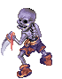
Soldier Skeleton |
|
x | ||

Bathory |

alde_dun04 (Video guide here) |
|
✓ |
|
Teddy Bear |

ein_fild03 |
|
x | |
Muka |

moc_fild02 |
|
x |
|
Zenorc |
orcsdun02 |
|
✓ |
|

Iara |

bra_dun02 (Brasilis Dungeon 2nd Floor) |
|
x | |

Evil Nymp |
gon_dun03 (Gonryun Dungeon 3rd floor) |
|
x | |
|
Tatacho |
man_fild03 (Video guide here) |
|
✓ | |
|
Hillslion |
|
✓ | ||


Solo instance guide
Sarah and Fenrir
Getting first time reward Sarah and Fenrir for beginers
Click Expand to view Guide.Prepare :  Yggdrasil Berry x 1
Yggdrasil Berry x 1
| Guide in lines | Images |
|---|---|
| Step 1 : Form a party and active the instance, remember that in this instance you won't be able to recruit more member after locking the party. | 
|
| Step 2 : Walk near Fenrir to trigger the dialogue, let the Homun stay near her and tank all summoned monsters until Fenrir finishes her spell. | 
|
| Step 3 : Go to the entrance to enter Glast Heim then head to the center of the map ASAP. Stay there for 5 minutes. | |
| Step 4 : After 5 minutes, the portal will appears, walk into the portal, then continue entering another on the upper floor. | 
|
| Step 5 : Go suicide, yeah, go suicide and wait until they finish their battle. | 
|
| Step 6 : Once they finish , you'll be teleported back to the center, use the Yggdrasil Berry prepared before to refill your HP, run as fast as possible to the start point ( where you first enter the instance ).
|
|
| Step 7 : Talk with Fenrir so she will reward you 1 Yggdrasil Berry, then walk to the portal at the right side.
|
|
Step 8 : Talk with Proffessor Bernhard to choose your Earring (I recommend to take  Sarah's Right Earring). Sarah's Right Earring).
|

|
Getting instances stuffs when having (almost) no equipments (Bayeri or Eira would be recommended)
Bossing in instances
Solo Outside Instance
Monster Hunter
Update Log
07/Oct/2019
- Change the Recommend Homunculus advices at Homunculus S.
11/Oct/2019
- Update Farming Place
19/Oct/2019
- Add Old Glast Heim (Hard), Horror Toy Factory solo Bosses video
25/Nov/2019
- Add Fall of Glast Heim items : King Schmidt's Manteau [1] and
 King Schmidt's Strong Insignia [1] along with their recommended enchants
King Schmidt's Strong Insignia [1] along with their recommended enchants
22/Dec/2019
- Add video guide to reach Majoruros, Bathory, Tatacho and Hillslion places. (fixed the wrong video URL.)
 Spare Card in Farming Place
Spare Card in Farming Place
23/Jan/2020
- Added Poison Breath for Equipment Suggestion.
- Fixed Stats Suggestion.
02/Feb/2020
- Added the following Equipments along with their recommended enchants (if available) :
- Vicious Mind Aura.
- Fallen Warrior Manteau [1]
- Coolant Injection [2]
 Vicious Mind Dagger [1] (kinda meme tho)
Vicious Mind Dagger [1] (kinda meme tho)- Red Lotus Sword [2] (actually not recommended)
- Removed :

21/Feb/2020
- Added the following Equipments (Thank CellteX#2113 for contribution) :
- To Late-game Equipment Suggestion :
- To Mid-game Equipments Suggestion ( Brewing ) :
- Fixed typo (Thank CellteX#2113 for contribution) :
- Well-Chewed Pencil should be +2 DEX instead of +3 DEX.
20/Mar/2020
- Added the following equipments :
- Crimson Magical Booster [1]
- Int Soutane [1] at Mid-game Equipments Suggestion ( Farming )
- Dex Soutane [1] at Mid-game Equipments Suggestion ( Farming ) and ( Brewing ) and Late-game Equipment Suggestion
- Luk Soutane [1] at Mid-game Equipments Suggestion ( Brewing)
 Purple Dragon Plate [1] at Mid-game Equipments Suggestion ( Farming ) and ( Brewing )
Purple Dragon Plate [1] at Mid-game Equipments Suggestion ( Farming ) and ( Brewing ) Silver Dragon Plate [1] at Mid-game Equipments Suggestion ( Brewing )
Silver Dragon Plate [1] at Mid-game Equipments Suggestion ( Brewing ) Blue Dragon Plate [1] at Mid-game Equipments Suggestion ( Farming )
Blue Dragon Plate [1] at Mid-game Equipments Suggestion ( Farming )
- At Late-game Equipment Suggestion


20/April/2020
- Fixed information of Sera's Skill : Pain Killer : the reduction amount should be Capped at 2000. ( Thanks Kanao#4663 for contribution ).
26/April/2020
 Create Bomb
Create Bomb  Sling Item
Sling Item  Plant Cultivation got removed
Plant Cultivation got removed- Added Monster Hunter
- Added Shadow Gears Suggestion
- Adjust description for Cart Cannon Spore Explosion Crazy Weed Hell Plant
- Added new recipe for new potion at Additional Info
- Added Solo Outside Instance
01/May/2020
- Added Purified Knight's Shield [1]
- Remove Vicious Mind Dagger [1]
- Change some notes for some equipment in Late-game equipments suggestion
15/May/2020
- Added several guide/suggestion videos.
23/Sep/2020
- Added the following equipments :
30/Jan/2021
- Added the following items:
13/Feb/2021
- Added Endless Tower and Endless Cellar using Eira Homunculus with minimal gears.
12/Mar/2021
- Change some description in Homunculus S
- Change some skills information to match the update (please text me if you found something wrong/outdated too.)
- Added Homunculus Supplement recipe and stats requred in Additional skills info
20/May/2021
- Remove
 Automatic Module (Drain Life) as recommendation.
Automatic Module (Drain Life) as recommendation.
04/June/2021
- Change some description about
 Bear's Might enchant.
Bear's Might enchant. - Add
 Automatic Leg A-type [1] and its recommended enchants.
Automatic Leg A-type [1] and its recommended enchants. - Add
 Mantis Card and Chaotic Mantis Card.
Mantis Card and Chaotic Mantis Card.
08/Nov/2021
- Add Thanatos Tower Accessories :
 Sinful Ruby Ring [1]
Sinful Ruby Ring [1] Sinful Ruby Necklace [1]
Sinful Ruby Necklace [1]- Sinful Emerald Ring [1]
- Sinful Emerald Necklace [1]
- Sinful Opal Ring [1]
- Sinful Opal Necklace [1]
 Brilliant Light Ruby Ring [1]
Brilliant Light Ruby Ring [1]- Brilliant Light Ruby Ring [1]
 Brilliant Light Zircon Ring [1]
Brilliant Light Zircon Ring [1]- Brilliant Light Zircon Necklace [1]
 Brilliant Light Aquamarine Ring [1]
Brilliant Light Aquamarine Ring [1]- Brilliant Light Aquamarine Necklace [1]
- Add Empathizer Card.
21/Feb/2022
- Added the following and their recommended enchants:
10/April/2022
- Added suggestion for Costume Stone enchants.
- Added Set 3 of Shadow Gears suggestion.
17/April/2022
- Remove Stats and Skills build suggestion section and replaced with Stats and Equipment set build suggestion
- Added
 Victory Wing Ears [1] and its recommended enchants.
Victory Wing Ears [1] and its recommended enchants.
11/July/2022
- Removed because these items are no longer consider recommended options:

- Added:
- Spore Bomb Shadow Guard
Paradise Genetic Mace
 Noblesse Cart Cannon Suit [1]
Noblesse Cart Cannon Suit [1] Noblesse Attack Manteau [1]
Noblesse Attack Manteau [1] Noblesse Attack Ring [1]
Noblesse Attack Ring [1] Noblesse Attack Boots [1]
Noblesse Attack Boots [1]- Imperial Cart Cannon Suit [1]
 Imperial Attack Manteau [1]
Imperial Attack Manteau [1] Imperial Attack Ring [1]
Imperial Attack Ring [1] Imperial Attack Boots [1]
Imperial Attack Boots [1] Grace Cart Cannon Suit [1]
Grace Cart Cannon Suit [1] Grace Attack Manteau [1]
Grace Attack Manteau [1]- Grace Attack Ring [1]
 Grace Attack Boots [1]
Grace Attack Boots [1]
20/Jan/2023
- Remove and rework some outdated options included equipments, enchants, skill descriptions.
- Added:
- Taurus Diadem [1]
- Illusion Chain Mail [1]
- Illusion Doom Slayer [1]
- Illusion Sprint Mail [1]
 Illusion Sprint Shoes [1]
Illusion Sprint Shoes [1] Illusion Sprint Ring [1]
Illusion Sprint Ring [1] Chaotic Acolyte Card
Chaotic Acolyte Card Red Lotus Sword-LT [2]
Red Lotus Sword-LT [2]- Rework on recommended Shadow gears
- Update RECOMMENDED END GAME GEARS Set 1 and 2.